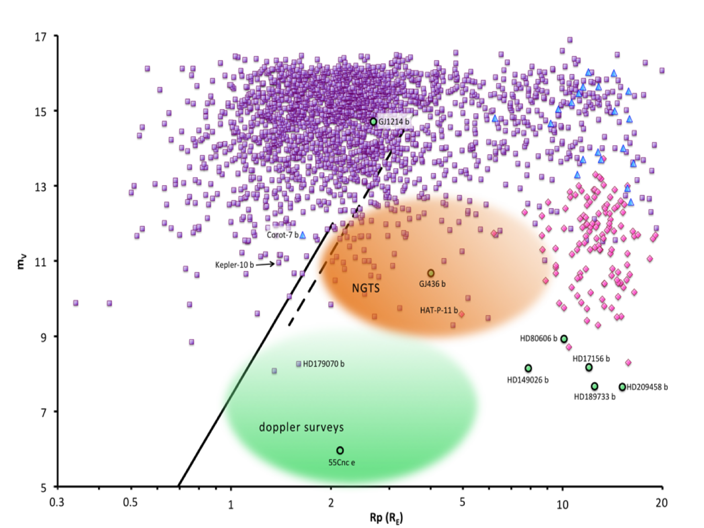
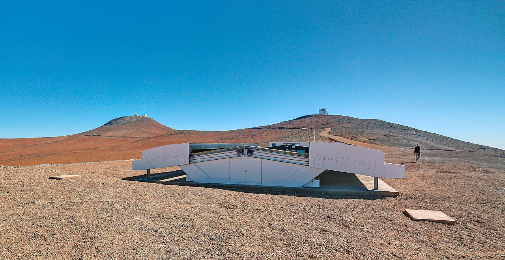

|
|
||||||
|
||||||
NGTS Survey
Parameter space for transit detection with the yellow area indicating
the prime science parameter space search of NGTS. Transit depth is
indicated as a function of planet and star radius. Approximate
spectral types of stars are also indicated, as well as the radii of
representative Solar system planets. Known transiting systems are
marked in green where they were discovered in ground-based transit
surveys, blue if they were originally identified in radial velocity
surveys, and red if they were discovered from space.
The optical system is therefore designed to observe with optimal sensitivity in the 600 to 900nm range, in order to match the peak emission of the primary targets (K and early M). Following the results from HARPS planet surveys on super-Earths, the work from Howard et al. 2010 as well as the results from Kepler, one can consider a conservative planet occurrence of typically 5% for Neptune size planets with periods shorter than 10 days (corresponding to an average transit probability of about 5%). One then finds that a minimum sample of about 40,000 stars needs to be monitored to detect about 100 transiting planets of this kind. With the additional constraint to identify these planets on bright stars, to ensure an optimal capability for follow-up observations, we consider a V magnitude of 13th as the practical faint limit. For M stars a fainter V-magnitude down to 15th may be considered in view of the smaller mass of the star and the larger radial-velocity amplitude expected. An additional benefit of staying in this magnitude range is the limited crowding factor, which is less than 20% for our PSF, even for a field 30 degrees from the Galactic plane.

NGTS is designed to find 2 - 10 Earth radius planets around stars brighter
than 13th mag (orange region).
Kepler's planets are mostly found around fainter stars (purple dots).
The previous SuperWASP survey was limited to Jupiter-sized planets (pink
dots). The green circles indicate planets orbiting stars bright enough for
their atmospheres to be studied with techniques such as transmission
spectroscopy. The diagonal lines indicate the limits of radial velocity
measurments (to the left of these lines, the planets' massess cannot be
determined with current technology).
Our simulations suggest we will detect ~140 sub-Neptune sized planets bright enough (V<15) for confirmation and mass determination with HARPS and the forthcoming ESPRESSO instrument on the VLT, and hence their bulk composition. We should also find ~20 sub-Neptune or Super-Earth sized planets bright enough (I<11) for detailed atmospheric characterisation with a href="http://www.eso.org/public/teles-instr/e-elt/">E-ELT, JWST, and CHEOPS, as well as >100 new hot Jupiters. The most fundamental result from Kepler is the statistical information gathered on Neptune and large Earth-like planets. NGTS is designed to detect this planet population around brighter stars, allowing systematic follow-up of planetary structure and atmospheric composition. Kepler candidates are mostly too faint to be studied in this detail. Interestingly the period distribution of small planets significantly rises above 4 days, motivating a facility with good detection efficiency in the 4 to 10 day period range. The 600-900nm wavelength region includes strong water bands whose rapid variations could degrade the quality of the photometry by adding short-term variable color effects. The superb dry conditions of the Paranal site in this respect crucially enhances the discovery potential of the survey. Another key parameter affecting the final planet catch is the number of clear nights per year. These factors have driven the selection of Paranal as the site for NGTS.

The NGTS enclosure at ESO-Paranal, with the VLT (left) and VISTA (right)
telescopes on their hilltops in the background.
Credit: ESO/R. Wesson | ||||||